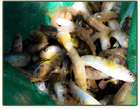

More From The Thames River Anglers Association
Sites of Interest to the 'ConserFishinist'
Conservation
Carolinian Canada’s diverse network advances a strategic ‘Big Picture’ vision for healthy landscapes and a green future in Canada’s deep south.
The Friends of the Thames has been organising and promoting the Annual Thames River Cleanup every spring for the past 14 years.Environmentally concerned volunteers, landowners, clubs, organizations and municipalities have come together during Earth week to help clean up portions of the Thames River watershed areas.Check out their Contacts page to find out who or what organization is cleaning up your favourite section of the Thames River.
Nature London undertakes a variety of projects to promote environmental awareness, enhance habitat and protect natural areas. MFN members participate in the Christmas Bird Count, the annual Butterfly Count and other initiatives which encourage the study of local natural history.
The primary concern of the founding members was the protection and enhancement of the north shore migratory Rainbow Trout (Steelhead) fishery, but their foresight led to the inclusion of all coldwater species in our constitution. This, by default, includes all species that use Lake Superior tributaries in their life cycle.
To promote the protection and rehabilitation of Ontario's rivers and streams through education and community action.
You may think you know who they are and what they do, but check the site, you may be surprised!
To conserve, protect and restore Canada's freshwater resources and their watersheds for current and future generations.
Conservation Authority
Governmental Entities
Support These Local Fishing and Related Retailers
681 Highbury Ave N, London, ON N5W 4L4 (519-649-7429)
2404 Main Street, London, ON N6P 1R2 (519-652-5598)
96 Rectory Street, London, ON N5Z 1Z9 (226-270-9029)
684460 Road 68, Woodstock, ON N4S 7V7 (519-539-5494)
Fishing and Related Links
This late great great friend of the Thames River and the Thames River Anglers Association was a Fly Fisherman, Tyer, Guide, Instructor, Author, College Prof', Artist, Raconteur, and Man About Town.
Quite likely the oldest and still one of the most viable conservation clubs in the London area. It's also where the TRAA holds their meetings.
Learn everything about all things fly fishing. Also great friends and supporters of the TRAA.
Activities include hosting fishing tournaments, guest speakers and events, and conservation activities with a focus on fun, friendship, learning and friendly competition.
Explore real-time river levels and flows (discharges) before you plan your fishing or canoe/kayak trip.
An interesting site with lots of info' on match angling, a growing aspect of our sport in North America.
This club organizes a series of fun fly fishing competitions across Ontario, one of which is the Thames River Open.
The aim of this website is to create a single source for accessing information for paddling the Thames River.
Disclaimer
MEMBERSHIPS ARE DUE!
You get to be a TRAA member for a whole year for only $25! Your membership also adds another voice to our efforts in protecting and enhancing aquatic habitats in the London & area community. You’ve taken a lot of enjoyment from this unique fishery. It’s time to give back by being a part of the solution.
FUNDRAISING
Efforts are underway to get the $$$ we need to continue many of the TRAA's most vital projects:



Improvements to the TRAA Trout Hatchery
Continuation of the Salmonid Monitoring Program
Funding the Komoka Creek Hydrological Study
Please email us if you'd like to take an active role in raising the funds needed for these and other important TRAA activities